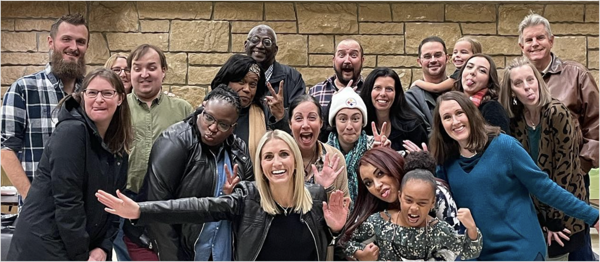

MHCI + YASU Spring 2022 Capstone
The capstone project of CMU’s Master of Human Computer Interaction program is a 7-month long engagement with an external client, with the purpose of delivering change and impact through human centered thinking, research, and design. Through the research we did in the spring, we focused on learning how to bring Young Adult Survivors United (YASU) to the next stages of growth. We began to change YASU’s workflows and organizational structure through research activities with the client and modeling.
As a rapidly growing non-profit organization, there are bound to be some challenges, so our team’s goal is to be able to work on exploring these possibilities together. Like any service-oriented organization, YASU has workflows that can be optimized. We found that YASU’s services have the highest impact when they are individualized because each young adult cancer experience is different. However, the support YASU’s services currently provide is limited to a small group of people due to resource constraints. The fundamental question we sought to answer throughout this project is: “How might we enable YASU to scale as an organization and to provide support to more young adult cancer survivors and co-survivors?”
